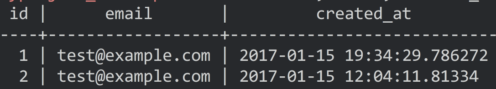
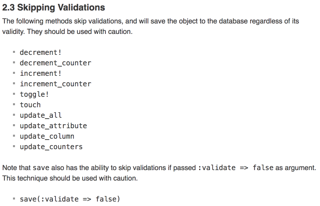

What happens when you insert a user in Rails?
Four queries!
- BEGIN
- SELECT * WHERE email='test@example.com'
- INSERT INTO users ...
- COMMIT
Feral Concurrency: the paper
BEGIN/SELECT/INSERT/COMMIT is not safe at READ COMMITTED
Most databases default to READ COMMITTED
You can get duplicate records

Some Rails functions *skip* the validations

The correct way is also faster
Why do ORM authors prefer the slow way?
Requires O(N) error handling
Vulnerable to races!
Our #1 cause of oncall incidents
Paper Results
- 67 Rails projects surveyed
- Avg 29 models per project
- Most consistency checks are in
the application
- Little use of txns, locks
Example transaction use (Spree)
- Canceling an order
- Approving an order
- Transferring shipments between warehouse locations
- Transferring items between shipments
No transactions used
- Placing an order
- Setting the available stock
Chesterton's Fence gone wrong
I think we should get rid of the [optimistic lock]
since there's no documentation about why it's there...
Conclusion (1)
DATABASE EXPERTS: (do
30 years of research on
consistency and locking)
RAILS: Nah, we're good
Lesson: abstractions and cross-DB abstractions are prized
Opportunity: common interfaces for error handling, CRUD
Unique constraint failure
- Postgres: 23505
- MySQL: 1169
- SQLite: 2067
Make it easier for ORM developers to use your database
Learn to evaluate ORM's
- What SQL does
User.create() run?
- Check FK behavior
- Check error handling on constraint failures
Use ORM's better
- Use database constraints
- UPDATE with a WHERE clause, not
.save()
- Give up on same ORM, different database
Thanks!
Kevin Burke
These slides are available at:
←
→
/
#